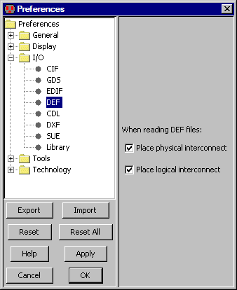

<!-- NEED 4in -->

<!-- HEADER 7-3-5: DEF Control -->

<!-- COMMAND File/Import/DEF (Design Exchange Format)... -->
<!-- PREFERENCE I/O/DEF -->

<TABLE><TR><TD><CENTER></CENTER></TD><TD>
DEF (Design Exchange Format) is a recent interchange format for CAD systems.
It is often combined with LEF (Library Exchange Format) files.
For more information on reading and writing DEF or LEF, see
<A HREF="chap03-09-02.html#chap03-09-02">Section 3-9-2</A> and
<A HREF="chap03-09-03.html#chap03-09-03">Section 3-9-3</A>,
respectively.
DEF options are controlled with the DEF Preferences
(in menu <B>File / Preferences...</B>, "I/O" section, "DEF" tab).
<P>
This dialog controls whether DEF reads physical and/or logical information.
</TD></TR></TABLE>

<!-- TRAILER -->
